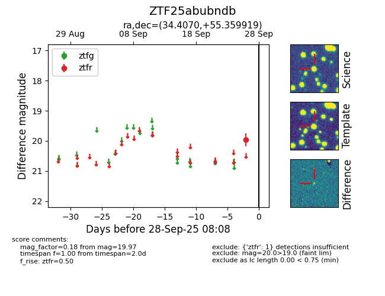

FINK: ZTF25abubndb
Lasair: ZTF25abubndb
ALeRCE: ZTF25abubndb
ZTF25abubndb (ztf,fink)
equatorial (ra, dec) = (34.4070,+55.35992)
galactic (l, b) = (135.0379,-5.47296)

last ztfr=19.97
1 ztfr detections